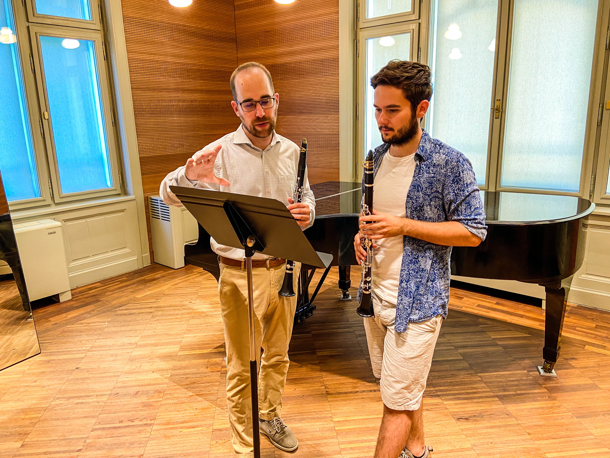
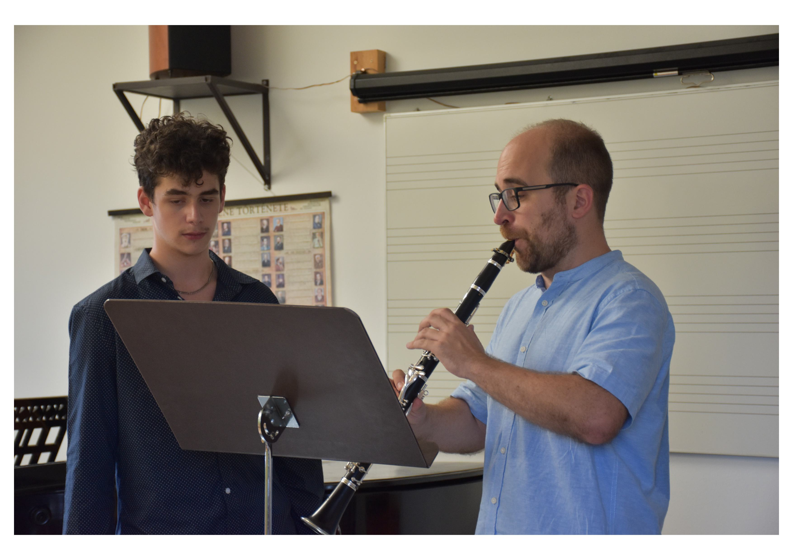
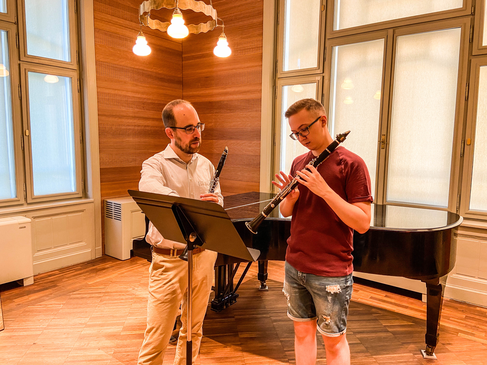
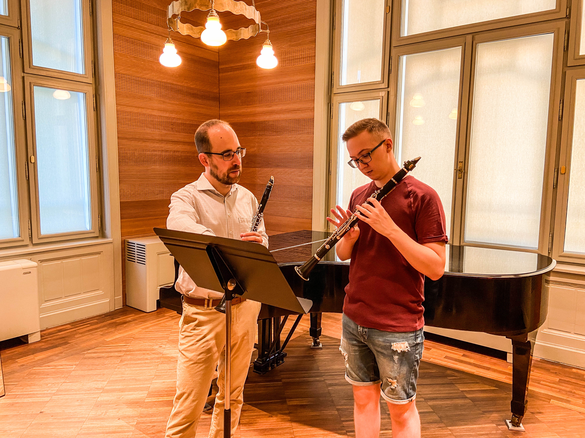
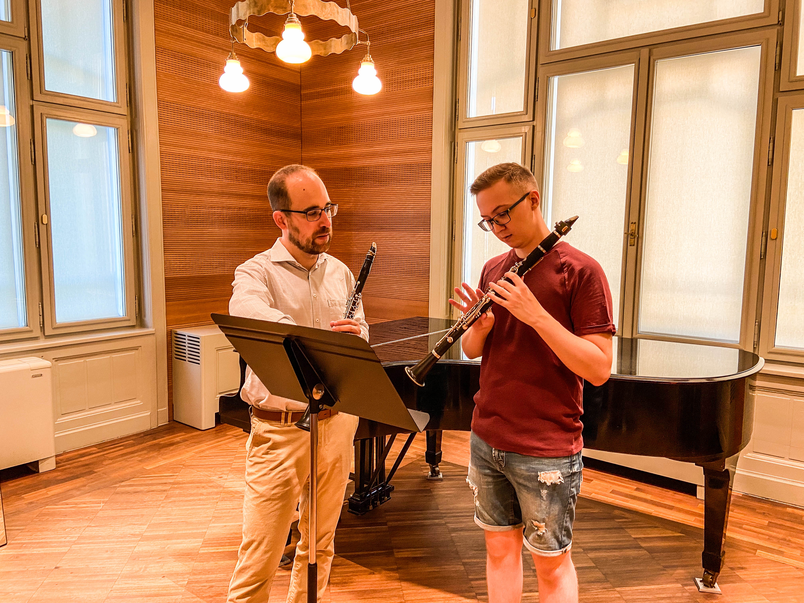
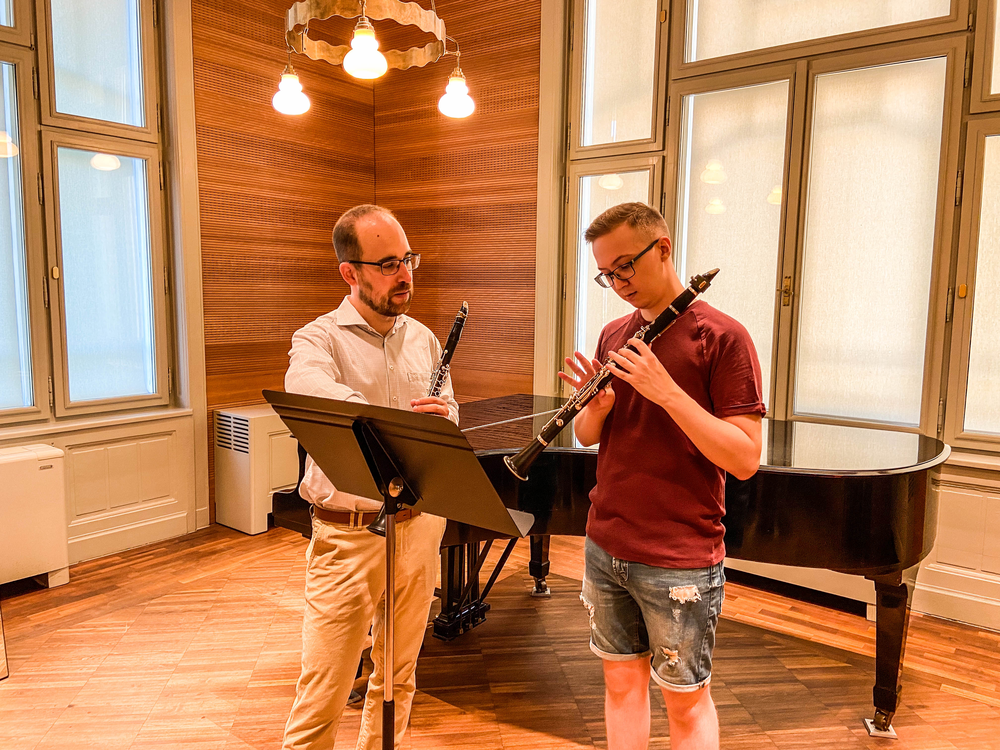

 



Ez a kurzus azoknak szól, akik szeretnék elmélyíteni tudásukat a zenében, függetlenül attól, hogy kezdő vagy már tapasztaltabbak. A Lisztium egy olyan közösséget alkot, ahol a zene iránti szenvedély és a tanulás iránti vágy találkozik, hogy egyesítse a japán és a magyar kultúrát a zenén keresztül.
Discover the beauty of keyboard and string instruments, where melody and harmony come together. From grand pianos to violins and guitars, each instrument offers a unique sound and character. Whether you're a beginner or a professional, explore our selection and find the perfect instrument to express your music.
Explore the rich tones of woodwind and brasswind instruments, where breath and technique create captivating melodies. From elegant flutes to powerful trumpets, each instrument brings its own distinct voice to the ensemble. Whether you're just starting out or a seasoned musician, explore our collection and find the perfect instrument to elevate your performance. Woodwind and brasswind instruments bring a rich and dynamic sound to orchestras, bands, and solo performances.
A lisztiumnál a zene nem csupán tananyag - ez egy élmény, amely gazgagítja mindennapjainkat és lehetőséget ad arra, hogy kreatív énünket kifejezzük. Ha mindig is szerettél volna zongorázni vagy hegedülni, de nem tudtad, hol kezjd hozzá, vagy ha mártapasztaltabb zenész vagy, és tovább szeretnéd fejleszteni tudásodat, akkor jó helyen jársz. Engedd, hogy a Lisztium Zeneiskola kapui megnyíljanak előtted, és belépj a hangok birodalmába, ahol a dallamok szárnyakon repítenek, és a harmóniák lelkedet melengetik. Itt nem csupán hangszereket tanulsz meg, hanem egy életre szóló szenvedélyt fedezel fel.
A lisztium több mint egy zenei oktatás - egy közösség, ahol a zene szeretete összeköt. Legyen szó klasszikus művekről, modern dallamokról vagy saját stílusod megteremtéséről ,segítünk, hogy közelebb kerülj álmaidhoz. Fedezzük fel együtt a zene örömét! Lépj kapcsolatba velünk, és induljunk el közösen ezen a különleges úton.
2025 August 7th-11th
Heisei College of Music, Kumamoto
Audition to participate at the event
2025 August 7th-11th
Heisei College of Music, Kumamoto
Audition to participate at the event